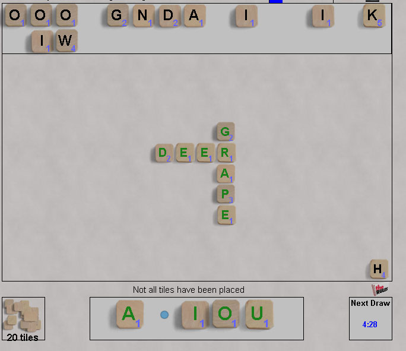

Sprint
Sprint is a crosswords race, inspired by Bananagrams. Read a complete description of the game here.
The basic idea that all players race to construct a crossword
from a pool of letters. All the words in the grid must be
real words, but not necessarily common words. All play is
simultaneous; more letters are added every time someone completes their
grid, until all letters have been placed.
The twists for this digital game:
- All
players have the same set of letters, so in some sense the game
is completely fair - no one is stuck with a Q unless everyone is.
- The game ends when someone completes a grid using all letters, the winner is the player with the highest scoring grid.
- More letters are added on a timer if no one is completing their grid.
- The
initial rack of 5 vowels makes sure you're never stuck without a
vowel, and also the slots in the rack can be used to exclude letters
you don't want to use immediately.
Dictionary:
Crosswords uses a limited lexicon derived from the open source program Collins Zyzzyva,
which has roughly 280,000 words considered acceptable for scrabble.
Of those, roughly 6000 are 5-letter words, but of those only
about 2000 would be considered common.
Robots:
not yet.
|

|